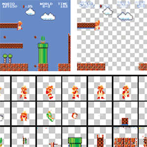

I am currently a research scientist at Netflix, working on machine learning and computer graphics for content creation. Previously, I earned my PhD in the Geometric Data Processing Group at MIT CSAIL, advised by Prof. Justin Solomon. My research interests lie on the intersection of graphics, machine learning, computer vision, and geometry.
I have been lucky to complete summer internships at Pixar Research, Adobe Research, Harvey Mudd College, the Lawrence Berkeley National Laboratory, and Google Maps. Prior to MIT, I received my BA in Math and Computer Science from Pomona College, advised by Prof. Vin de Silva.
In my spare time, I enjoy photography, cooking, and mixology.
Research

A Diffusion-Based Texturing Pipeline for Production-Grade Assets
Winnie Lin, Dmitriy Smirnov, Richard Smith
SIGGRAPH Talks, 2024, Denver
BibTeX
Winnie Lin, Dmitriy Smirnov, Richard Smith
SIGGRAPH Talks, 2024, Denver
BibTeX
@inproceedings{lin2024diffusiontexturing,
title={A Diffusion-Based Texturing Pipeline for Production-Grade Assets},
author={Lin, Winnie and Smirnov, Dmitriy and Smith, Richard},
year={2024},
booktitle={SIGGRAPH Talks}
}
Magenta Green Screen: Spectrally Multiplexed Alpha Matting with Deep Colorization
Dmitriy Smirnov, Chloe LeGendre, Xueming Yu, Paul Debevec
The Digital Production Symposium (DigiPro), 2023, Los Angeles
Paper | Webpage | Supplementary Video | BibTeX
Dmitriy Smirnov, Chloe LeGendre, Xueming Yu, Paul Debevec
The Digital Production Symposium (DigiPro), 2023, Los Angeles
Paper | Webpage | Supplementary Video | BibTeX
@inproceedings{smirnov2023magentagreenscreen,
title={Magenta Green Screen: Spectrally Multiplexed Alpha Matting with Deep Colorization},
author={Smirnov, Dmitriy and LeGendre, Chloe and Yu, Xueming and Debevec, Paul},
year={2023},
booktitle={The Digital Production Symposium (DigiPro)}
}
Wassersplines for Stylized Neural Animation
Paul Zhang, Dmitriy Smirnov, Justin Solomon
Symposium on Computer Animation (SCA), 2022, Durham (Best Paper Honorable Mention)
Paper | Code | BibTeX
Paul Zhang, Dmitriy Smirnov, Justin Solomon
Symposium on Computer Animation (SCA), 2022, Durham (Best Paper Honorable Mention)
Paper | Code | BibTeX
@inproceedings{zhang2022wassersplines,
title={Wassersplines for Stylized Neural Animation},
author={Zhang, Paul and Smirnov, Dmitriy and Solomon, Justin},
year={2022},
booktitle={Proceedings of the IEEE SIGGRAPH/Eurographics in Computer Animation (SCA)}
}

Deep Learning on Geometry Representations
Dmitriy Smirnov
PhD Dissertation, MIT Department of Electrical Engineering and Computer Science, 2022
Paper | BibTeX
Dmitriy Smirnov
PhD Dissertation, MIT Department of Electrical Engineering and Computer Science, 2022
Paper | BibTeX
@phdthesis{smirnov2022deep,
title={Deep Learning on Geometry Representations},
school={Massachusetts Institute of Technology},
author={Smirnov, Dmitriy},
year={2022},
}
DeepCurrents: Learning Implicit Representations of Shapes with Boundaries
David Palmer*, Dmitriy Smirnov*, Stephanie Wang, Albert Chern, Justin Solomon
(* denotes equal contribution)
Conference on Computer Vision and Pattern Recognition (CVPR), 2022, New Orleans
Paper | Webpage | Video | Code | BibTeX
David Palmer*, Dmitriy Smirnov*, Stephanie Wang, Albert Chern, Justin Solomon
(* denotes equal contribution)
Conference on Computer Vision and Pattern Recognition (CVPR), 2022, New Orleans
Paper | Webpage | Video | Code | BibTeX
@inproceedings{palmer2022deepcurrents,
title={{DeepCurrents}: Learning Implicit Representations of Shapes with Boundaries},
author={Palmer, David and Smirnov, Dmitriy and Wang, Stephanie and Chern, Albert and Solomon, Justin},
year={2022},
booktitle={Proceedings of the IEEE/CVF Conference on Computer Vision and Pattern Recognition (CVPR)}
}

MarioNette: Self-Supervised Sprite Learning
Dmitriy Smirnov, Michaël Gharbi, Matthew Fisher, Vitor Guizilini, Alexei A. Efros, Justin Solomon
Conference on Neural Information Processing Systems (NeurIPS), 2021, online
Paper | Webpage | Video | Code | BibTeX
Dmitriy Smirnov, Michaël Gharbi, Matthew Fisher, Vitor Guizilini, Alexei A. Efros, Justin Solomon
Conference on Neural Information Processing Systems (NeurIPS), 2021, online
Paper | Webpage | Video | Code | BibTeX
@inproceedings{smirnov2021marionette,
title={{MarioNette}: Self-Supervised Sprite Learning},
author={Smirnov, Dmitriy and Gharbi, Micha\"el and Fisher, Matthew and Guizilini, Vitor and Efros, Alexei A. and Solomon, Justin},
year={2021},
booktitle={Advances in Neural Information Processing Systems}
}
Interactive All-Hex Meshing via Cuboid Decomposition
Lingxiao Li, Paul Zhang, Dmitriy Smirnov, S. Mazdak Abulnaga, Justin Solomon
SIGGRAPH Asia, 2021, Tokyo
Paper | Code | BibTeX
Lingxiao Li, Paul Zhang, Dmitriy Smirnov, S. Mazdak Abulnaga, Justin Solomon
SIGGRAPH Asia, 2021, Tokyo
Paper | Code | BibTeX
@article{li2021hex,
title={Interactive All-Hex Meshing via Cuboid Decomposition},
author={Li, Lingxiao and Zhang, Paul and Smirnov, Dmitriy and Abulnaga, Mazdak and and Solomon, Justin},
month={December},
year={2021},
journal={ACM Transactions on Graphics (TOG)},
publisher={ACM},
volume={40},
number={6},
pages={256:1--256:17}
}
HodgeNet: Learning Spectral Geometry on Triangle Meshes
Dmitriy Smirnov, Justin Solomon
SIGGRAPH, 2021, online
Paper | Webpage | Video | Code | BibTeX
Dmitriy Smirnov, Justin Solomon
SIGGRAPH, 2021, online
Paper | Webpage | Video | Code | BibTeX
@article{smirnov2021hodgenet,
title={{HodgeNet}: Learning Spectral Geometry on Triangle Meshes},
author={Smirnov, Dmitriy and Solomon, Justin},
month={August},
year={2021},
journal={ACM Transactions on Graphics (TOG)},
publisher={ACM},
volume={40},
number={4},
pages={166:1--166:11}
}
Polygonal Building Segmentation by Frame Field Learning
Nicolas Girard, Dmitriy Smirnov, Justin Solomon, Yuliya Tarabalka
Conference on Computer Vision and Pattern Recognition (CVPR), 2021, online (Oral Presentation, Best Paper Finalist)
IEEE International Geoscience and Remote Sensing Symposium (IGARSS), 2020, online (Oral Presentation)
Paper | Video | Code | BibTeX
Nicolas Girard, Dmitriy Smirnov, Justin Solomon, Yuliya Tarabalka
Conference on Computer Vision and Pattern Recognition (CVPR), 2021, online (Oral Presentation, Best Paper Finalist)
IEEE International Geoscience and Remote Sensing Symposium (IGARSS), 2020, online (Oral Presentation)
Paper | Video | Code | BibTeX
@inproceedings{girard2021pbs,
title={Polygonal Building Segmentation by Frame Field Learning},
author={Girard, Nicolas and Smirnov, Dmitriy and Solomon, Justin and Tarabalka, Yuliya},
year={2021},
booktitle={Proceedings of the IEEE/CVF Conference on Computer Vision and Pattern Recognition (CVPR)}
}
Learning Manifold Patch-Based Representations of Man-Made Shapes
Dmitriy Smirnov, Mikhail Bessmeltsev, Justin Solomon
International Conference on Learning Representations (ICLR), 2021, online
Paper | Webpage | Video | Code | BibTeX
Dmitriy Smirnov, Mikhail Bessmeltsev, Justin Solomon
International Conference on Learning Representations (ICLR), 2021, online
Paper | Webpage | Video | Code | BibTeX
@inproceedings{smirnov2021patchbased,
title={Learning Manifold Patch-Based Representations of Man-Made Shapes},
author={Smirnov, Dmitriy and Bessmeltsev, Mikhail and Solomon, Justin},
year={2021},
booktitle={Proceedings of the IEEE/CVF Conference on Computer Vision and Pattern Recognition (CVPR)}
}
Deep Parametric Shape Predictions using Distance Fields
Dmitriy Smirnov, Matthew Fisher, Vladimir G. Kim, Richard Zhang, Justin Solomon
Conference on Computer Vision and Pattern Recognition (CVPR), 2020, online
Paper | Webpage | Video | Poster | Code | BibTeX
Dmitriy Smirnov, Matthew Fisher, Vladimir G. Kim, Richard Zhang, Justin Solomon
Conference on Computer Vision and Pattern Recognition (CVPR), 2020, online
Paper | Webpage | Video | Poster | Code | BibTeX
@inproceedings{smirnov2020dps,
title={Deep Parametric Shape Predictions using Distance Fields},
author={Smirnov, Dmitriy and Fisher, Matthew and Kim, Vladimir G. and Zhang, Richard and Solomon, Justin},
year={2020},
booktitle={Proceedings of the IEEE/CVF Conference on Computer Vision and Pattern Recognition (CVPR)}
}
Triplet Merge Trees
Dmitriy Smirnov, Dmitriy Morozov
Topological Methods in Data Analysis and Visualization V, 2020
Topology-Based Methods in Visualization (TopoInVis), 2017, Tokyo (Best Paper)
Paper | BibTeX
Dmitriy Smirnov, Dmitriy Morozov
Topological Methods in Data Analysis and Visualization V, 2020
Topology-Based Methods in Visualization (TopoInVis), 2017, Tokyo (Best Paper)
Paper | BibTeX
@article{smirnov2020tmt,
title={Triplet Merge Trees},
author={Smirnov, Dmitriy and Morozov, Dmitriy},
year={2020},
journal={Topological Methods in Data Analysis and Visualization V}
}
SimpleX: Software tools for visualizing functions on simplicial complexes
Dmitriy Smirnov
Senior thesis in mathematics, Pomona College, 2017 (with Distinction)
Paper | Demo
Dmitriy Smirnov
Senior thesis in mathematics, Pomona College, 2017 (with Distinction)
Paper | Demo
DTL Reconciliation Repair
Weiyun Ma, Dmitriy Smirnov, Ran Libeskind-Hadas
BMC Bioinformatics 18, 2017
Asia Pacific Bioinformatics Conference (APBC), 2017, Shenzhen
Paper
Weiyun Ma, Dmitriy Smirnov, Ran Libeskind-Hadas
BMC Bioinformatics 18, 2017
Asia Pacific Bioinformatics Conference (APBC), 2017, Shenzhen
Paper
Visualizing Scissors Congruence
Satyan L. Devadoss, Ziv Epstein, Dmitriy Smirnov
Symposium on Computational Geometry (SoCG), 2016, Boston
Experts’ Choice in the 2018 NSF Vizzies Visualization Challenge
Paper | Demo | Popular Science | Code
Satyan L. Devadoss, Ziv Epstein, Dmitriy Smirnov
Symposium on Computational Geometry (SoCG), 2016, Boston
Experts’ Choice in the 2018 NSF Vizzies Visualization Challenge
Paper | Demo | Popular Science | Code
DTL-RnB: Algorithms and Tools for Summarizing the Space of DTL Reconciliations
Weiyun Ma, Dmitriy Smirnov, Juliet Forman, Annalise Schweickart, Carter Slocum, Srinidhi Srinivasan, Ran Libeskind-Hadas
IEEE/ACM Transactions on Computational Biology and Bioinformatics 15.2, 2018
Asia Pacific Bioinformatics Conference (APBC), 2016, San Francisco
Paper
Weiyun Ma, Dmitriy Smirnov, Juliet Forman, Annalise Schweickart, Carter Slocum, Srinidhi Srinivasan, Ran Libeskind-Hadas
IEEE/ACM Transactions on Computational Biology and Bioinformatics 15.2, 2018
Asia Pacific Bioinformatics Conference (APBC), 2016, San Francisco
Paper